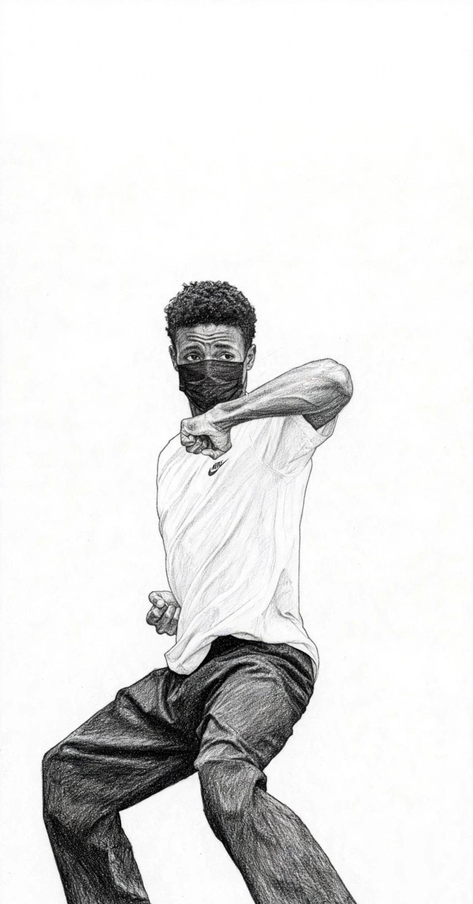
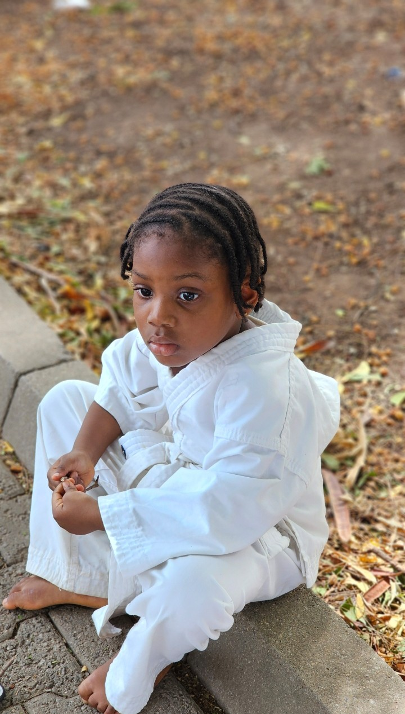

Map your martial arts progression from white belt to 10th Dan. Understand your training commitment, visualize every milestone, and see where your current pace could take you — transparently calculated, step by step.
Three questions, answered with clarity. FORECAST brings data-driven insight to your martial arts progression — from your first class to your highest Dan.
See your current rank, time in grade, accumulated training hours, and exactly how close you are to your next milestone.
Visualize every belt from where you are now — to Black Belt, and beyond through all 10 Dan grades — with projected dates.
FORECAST respects both training volume and minimum time-in-grade. Complete hours early? The system tells you honestly.
Adjust your training frequency and see how it reshapes your projected journey. Plan with confidence.
Already a black belt? Project your path through 2nd, 3rd, 4th... all the way to 10th Dan — with realistic timelines.
Print your forecast as a clean, shareable PDF. Keep it for your records, share with your instructor, or pin it on your wall.
Black belt is not the end — it's the beginning of mastery. FORECAST maps every Dan grade with realistic timelines based on minimum time-in-grade and cumulative training hours.
Foundation complete. The student becomes a practitioner.
Refined technique. Teaching begins.
Senior practitioner. Licensed instructor.
Master level. School ownership eligibility.
Grand master ranks. A lifetime of contribution.
Tell us your current rank, training frequency, and last grading date. Takes less than a minute.
Our engine applies standard progression hours, minimum time-in-grade, and your training pace — for every belt and Dan.
Get a clear, interactive map of your journey. Print it as PDF, adjust scenarios, or share with your instructor.
FORECAST is a progression planning and estimation tool. Forecast dates are not guarantees of promotion. Actual grading eligibility depends on technical competence, training requirements, minimum time-in-grade, conduct, instructor assessment, and the rules of the relevant martial arts organisation. The instructor's decision always supersedes the forecast.
Whether you're tying your white belt for the first time or preparing for your next Dan examination — FORECAST maps the path ahead.
Pick the date you'll begin (or began) training. We'll project your full journey to Black Belt and beyond.
We'll map your journey from here — including full Dan progression if you're already a black belt.
Based on your current training commitment
This is a forecast, not a guarantee. Forecast dates are projections based on your training commitment. Actual promotion depends on technical competence, minimum time-in-grade, conduct, and your instructor's assessment. The instructor's decision always supersedes the forecast.